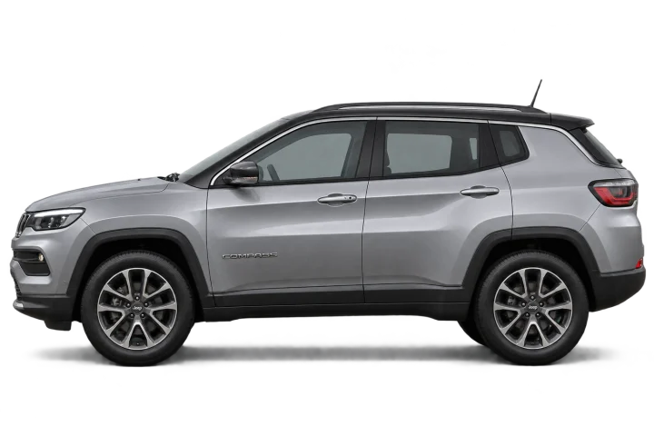
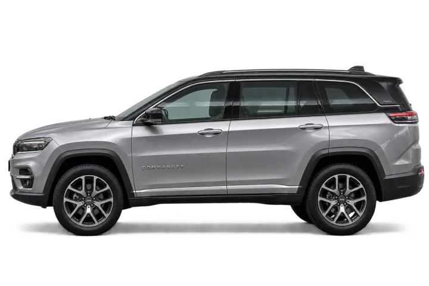
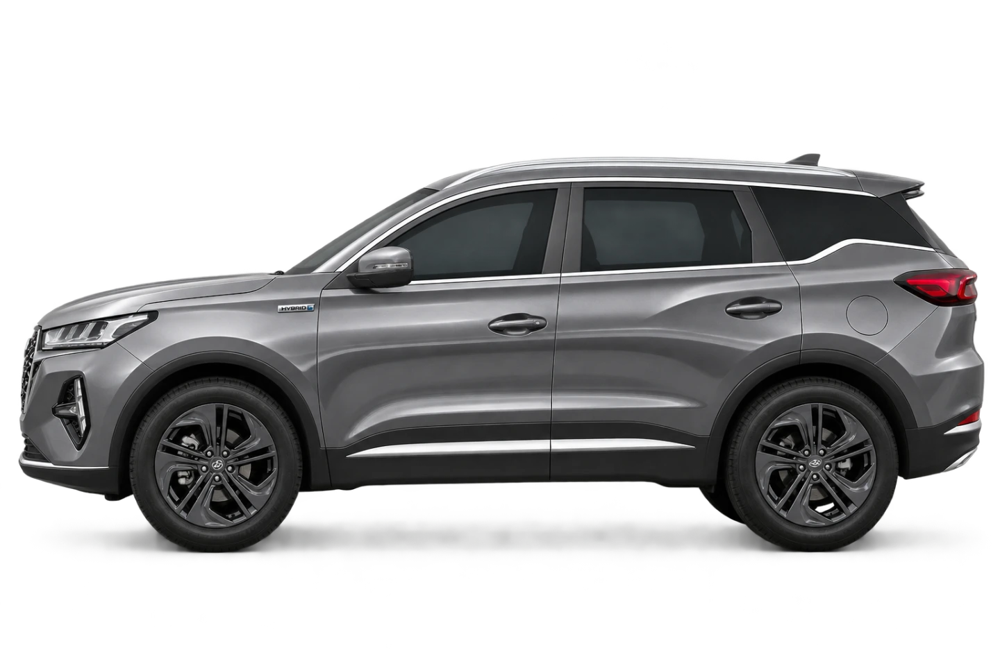

Blindagem
Teto solar blindado: abertura ou transparência?
Conheça as configurações apresentadas pela Hi-Tech e o que confirmar antes de escolher a solução para o seu veículo.
Ler artigoMais de duas décadas dedicadas a proteger o que importa. Blindagem nível III-A, tecnologia e cuidado em cada detalhe do seu veículo.
Nove marcas. O mesmo cuidado em cada projeto. Conheça os programas de blindagem, os benefícios e as condições para o seu veículo.

Compass
CommanderA Hi-Tech integra a rede de blindadoras homologadas pela Jeep. Veículos novos e usados podem participar, após avaliação e conforme as regras do programa.

Tiggo 7 ProA Hi-Tech é a blindadora exclusiva e certificada pela CAOA Chery. Uma parceria construída ao longo de anos com o grupo CAOA, com reconhecimento da capacidade técnica e do cuidado em cada projeto. Consulte a elegibilidade da versão e do ano do seu Tiggo 7 Pro.
 Haval H6
Haval H6A GWM inclui a Hi-Tech entre suas blindadoras parceiras. Consulte a configuração disponível para a versão e o ano do seu Haval H6.
Eletrificação, tecnologia e engenharia avançada exigem atenção especializada em cada intervenção. A Hi-Tech realiza um processo homologado, com materiais de alto desempenho e cuidado com a arquitetura original do veículo.
 Rampage
Rampage 1500
1500 2500
2500 3500
3500A Hi-Tech é uma das parceiras do programa de blindagem homologada RAM. Picapes novas e usadas passam por avaliação técnica e pelas condições de elegibilidade.
Design, tecnologia e sofisticação pedem uma blindagem que acompanhe o padrão do veículo. A Hi-Tech oferece um processo homologado com materiais de alto desempenho, experiência técnica e atenção aos detalhes.
Da picape ao SUV, robustez, desempenho e engenharia fazem parte da identidade Ford. Preservar essas características é uma prioridade durante a blindagem.
Conforto, tecnologia e segurança acompanham a rotina de quem escolhe um Hyundai. Na Hi-Tech, cada projeto recebe atenção técnica para incorporar a blindagem e preservar as características originais do veículo.
A engenharia 4x4 e a tradição no rally fazem parte da trajetória Mitsubishi. Incorporar a blindagem exige experiência para respeitar a robustez, o desempenho e os detalhes do projeto original.
Da escolha do projeto ao acompanhamento depois da entrega, reunimos tecnologia, experiência e cuidado para proteger você e o seu veículo.
em blindagem automotiva
em vidros e componentes balísticos
nos programas Jeep, RAM e GWM, conforme o componente e as condições aplicáveis*
com programas e condições apresentados em Homologações
* Conforme as condições de cada programa. Consulte a elegibilidade do seu veículo.
Na Moóca, em São Paulo, reunimos tecnologia, profissionais e mais de 20 anos de experiência para cuidar de cada etapa da blindagem.
Conheça nossa estrutura
Novidades, bastidores e conversas sobre carros com Gabriel Bucker. Acompanhe o que acontece no dia a dia.
Acompanhar no InstagramPublicações de Gabriel Bucker
Ver @gabriel.hitech no Instagram
Conheça as configurações apresentadas pela Hi-Tech e o que confirmar antes de escolher a solução para o seu veículo.
Ler artigoEntenda como a escolha dos materiais se relaciona ao projeto e por que o peso de uma peça não representa o carro inteiro.
Ler artigoFabricante, linha, condições de cobertura e cuidados: as informações para entender a opção prevista no seu projeto.
Ler artigoProcura um veículo já blindado?
Conheça o Showroom